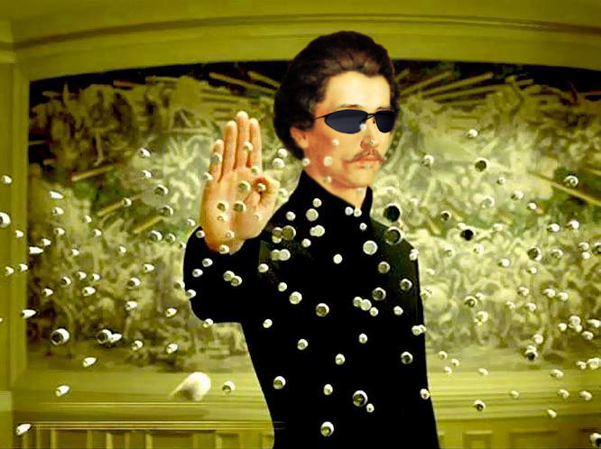

Petőfi Sándor életrajza lenyűgöző és inspiráló. 1823-ban, Zólyom vármegyében született, egy szegény nemesi család gyermekeként. Az iskolában már korán megmutatta tehetségét és érdeklődését az irodalom iránt. Fiatalon, édesapja halála után, nehéz körülmények között élte életét, és a szegénység ellenére költői ambícióit követte. Pesten telepedett le az 1830-as években, ahol kezdetben különféle munkákat vállalt megélhetése érdekében. Közben folytatta irodalmi tevékenységét, és hamarosan az irodalmi élet egyik meghatározó alakja lett. Költőként és publicistaként egyaránt elismerték, és versei gyorsan népszerűvé váltak az olvasók körében.

...
Korán elhagyta a szülői házat és az éhségtől szenvedve keresett kenyeret. Munkái révén keresett pénzzel segítette családját. Az 1830-as években Pesten telepedett le, ahol költőként és újságíróként próbált megélhetést találni. Ekkor kezdődött irodalmi karrierje, és hamarosan a magyar irodalmi élet egyik legismertebb alakja lett.
Az élete a forradalom és szabadságharc eseményeivel fonódik össze. Petőfi szenvedélyesen támogatta a polgári szabadságjogokat és a nemzeti függetlenséget, és aktívan részt vett az 1848-as forradalomban. Verseivel és szónoki képességeivel nagy hatást gyakorolt a korabeli közvéleményre, és népszerűsége töretlen volt a forradalom leverése után is.
...
Petőfi élete tragikus módon ért véget. 1849-ben, a forradalom leverése után, ismeretlen körülmények között eltűnt, és soha nem találták meg a nyomát. Halála körül számos találgatás és elmélet kering, de pontos sorsa máig rejtély. Az élete és művei azonban örökre beírták őt a magyar irodalom és történelem nagy alakjai közé, és emléke még ma is él a magyar nép szívében.